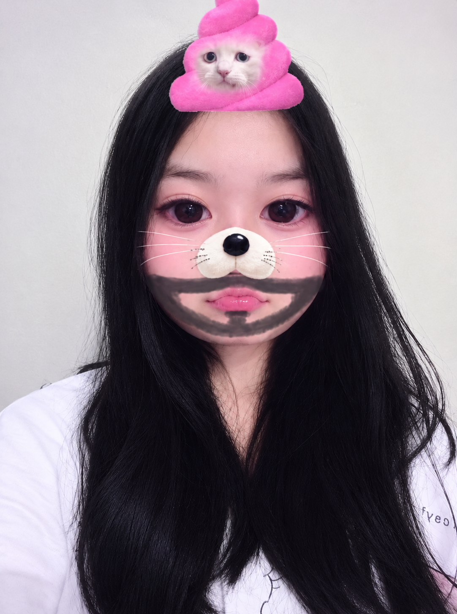

For My Favorite Person
♡ a little message just for you ♡
Kamu nggak harus selalu kuat. Kamu boleh istirahat, kamu boleh nangis, dan kamu boleh cerita sama aku. ❤️
To My Love 🌷
Sayang, kalau hari ini dunia terasa berat, istirahat dulu ya.
Kamu nggak perlu pura-pura bahagia di depanku. Aku mau mengenal semua sisi dirimu, termasuk saat kamu sedang sedih.
Terima kasih karena sudah bertahan sejauh ini. Aku bangga sama kamu, bahkan untuk hal-hal kecil yang mungkin kamu sendiri nggak sadari.
Kalau kamu merasa sendirian, ingat bahwa kamu pantas disayangi. ❤️
i love you, always 💗
dibuat dengan penuh cinta ♡